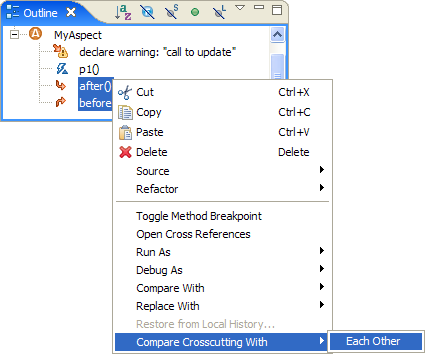
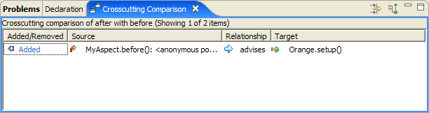
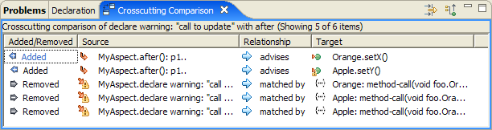
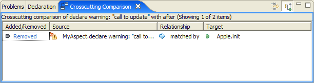

The following new features are available in development builds 1.4.0.20060228072358 or later, for Eclipse 3.2M5a.
A Propagate Up toggle button has been added to the Crosscutting Comparison view. The sources and targets of relationships shown in the view can be methods, types, and join points within methods, such as calls to other methods and catch blocks. Pressing the toggle button increases the level of granularity by replacing these sub-method elements with their enclosing method. This means that a comparison between two locations within the same method would normally show as a difference, but with the toggle selected, they would be considered the same.
The original crosscutting comparison functionality allows comparison between two projects (or more usually two versions of the same project). It is now possible to compare two elements within the same project. These elements can be either advice statements or declare error/warning statements. For example, to see whether two advice statements affect the same locations, select them both in the outline view (or package explorer) and select Comparing Crosscutting With > Each Other from the context-menu.
The Crosscutting Comparison view will then show the differences between the locations affected. One use of this would be when refactoring a pointcut from one which lists the join points to match individually, to one which attempts to match the same join points but with a more robust property-based pointcut.
You can also compare two declare error/warning statements, or compare one declare statement with an advice statement. This second combination can be particularly useful when refactoring code to use aspects. You might first use a declare warning statement to identify behaviour that is going to be handled by an aspect, such as certain calls to a method. You then write some advice to capture that policy, by advising the relevant methods. But you need to check that the advice is accurate, in that it affects the same locations identified by the declare warning. Such a comparison might look like this:
On its own this is not that useful (particularly when the number of advised locations is large), because the declare warning targets specific method calls, but the advice targets the execution of methods, so they all appear as differences in the comparison. This is where the Propagate Up button comes in! By selecting this the granularity of comparison is raised to the level of enclosing methods. This makes the significant difference between the two elements clear:
This shows that the declare warning affects a method (in this case it is a method call within that method) which is not also affected by the after advice. Naturally comparisons like this are most useful with large projects, where the crosscutting is more wide-spread.